Old hut and new cottage

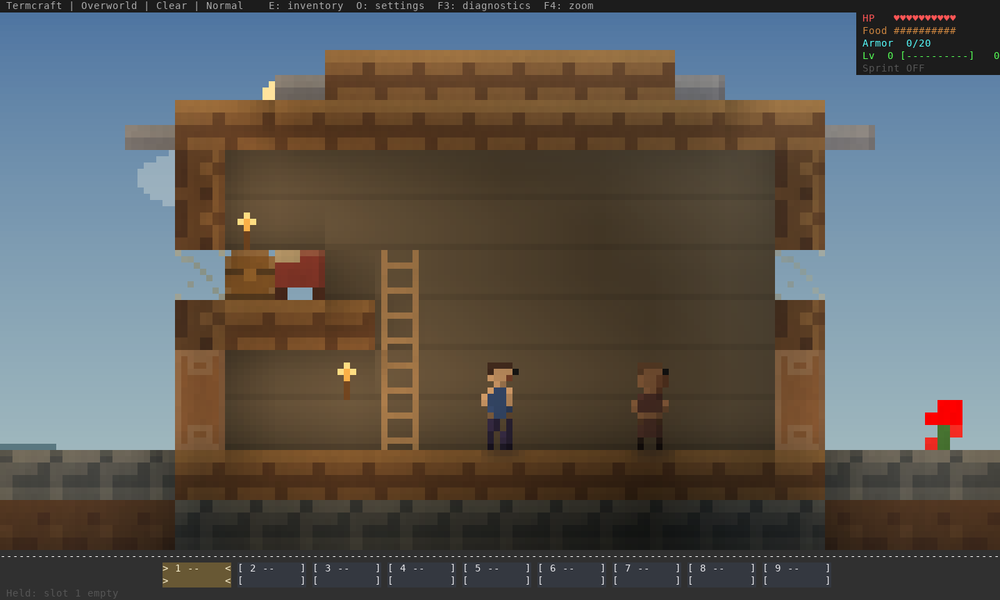
Actual Termcraft renderer output, software rasterized from ANSI. Three buildings, clear corridors, reachable lofts, a covered market gate and irrigated garden replace the cramped hut. Screenshot poses are staged in a generated world; the native walk uses actual keyboard and mouse input. The old and new buildings have different geometry. Review, reproduction and limits.

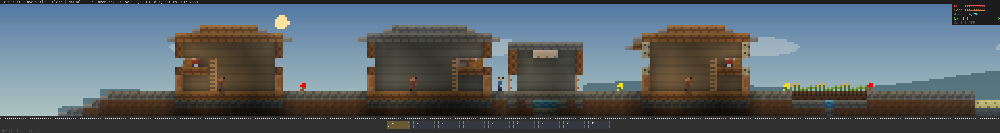
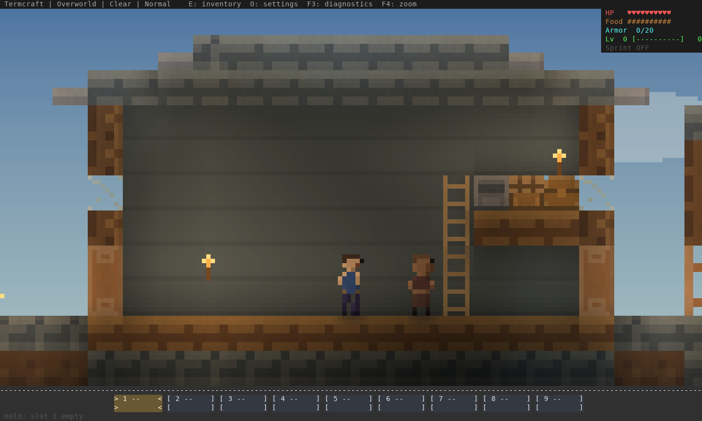
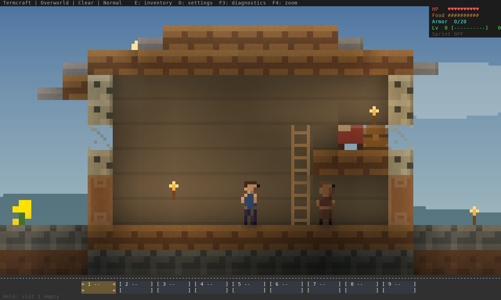
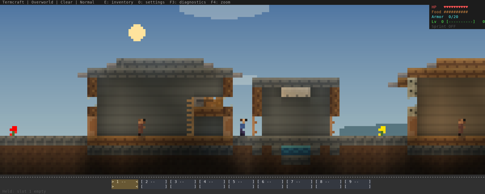
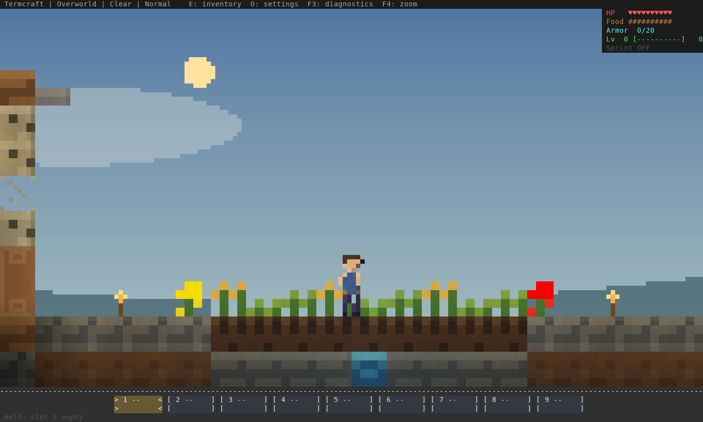
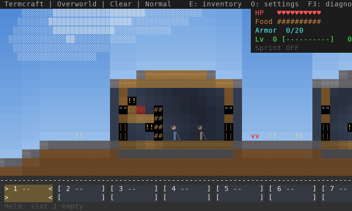
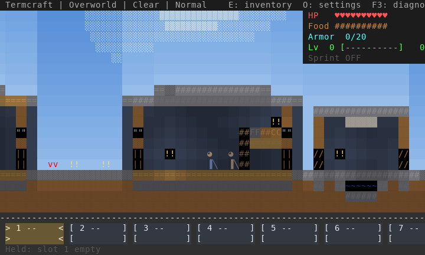
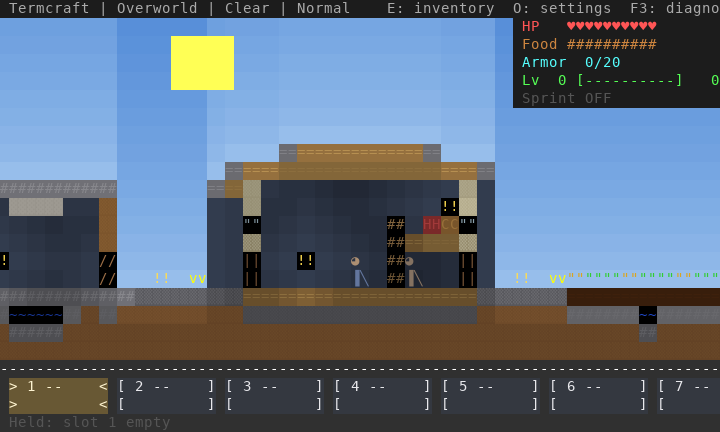
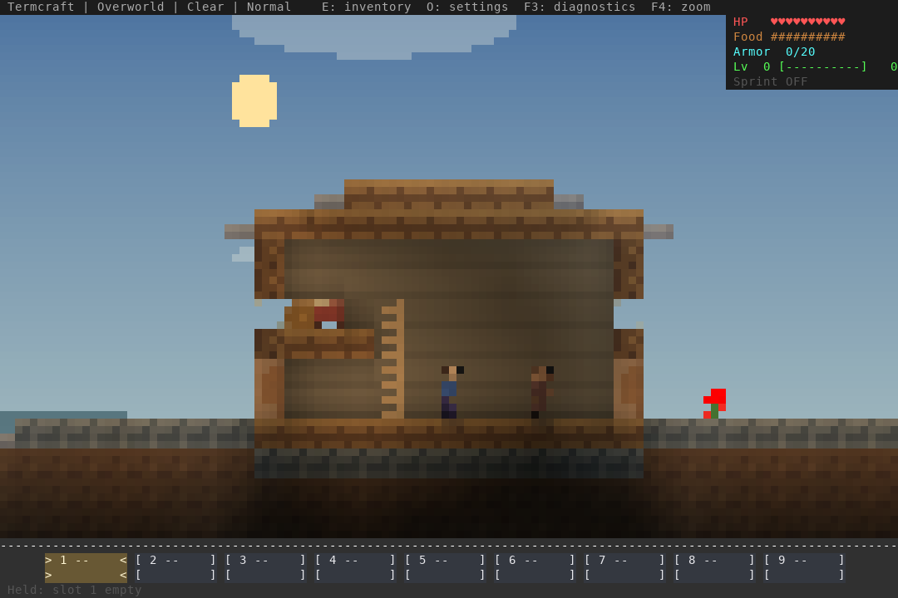
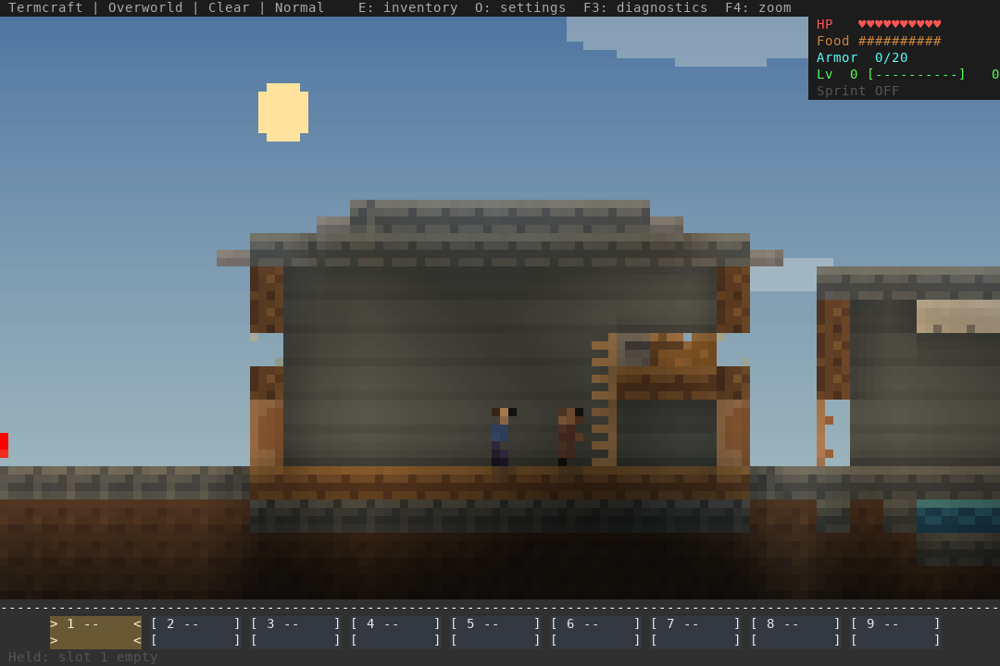
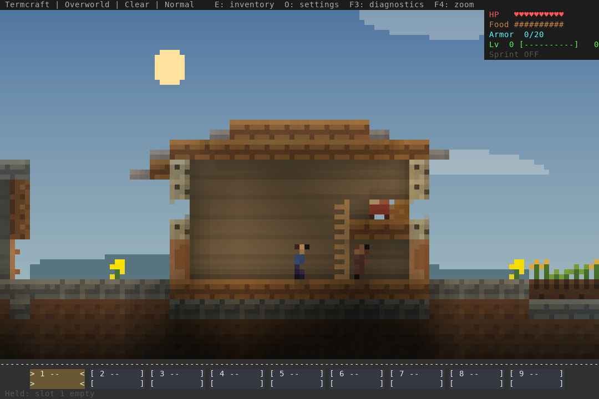
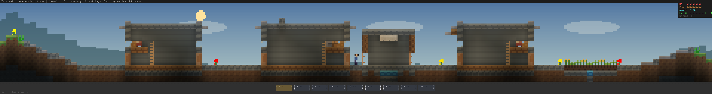
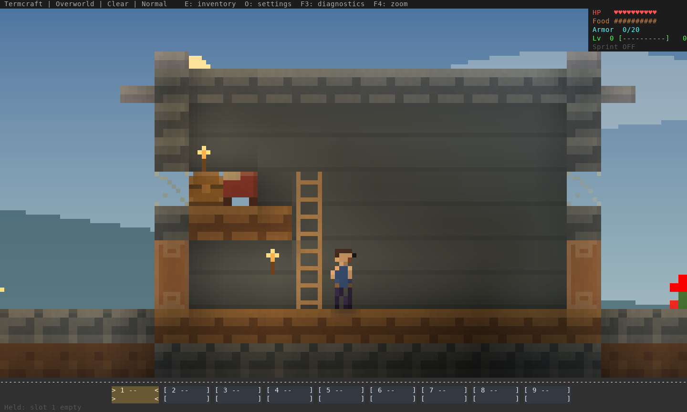